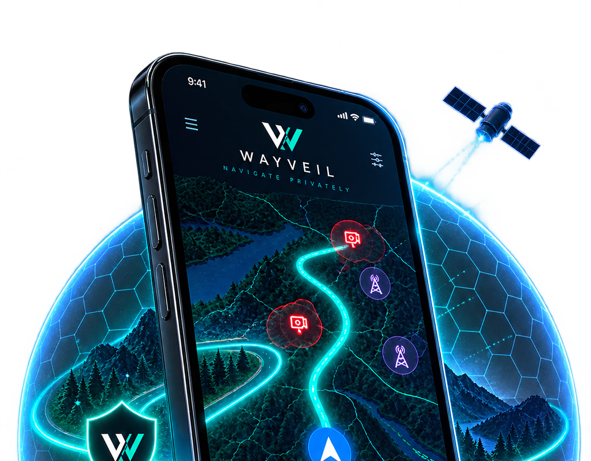

Your location
Current location can power local navigation without becoming Alpha-access identity or history.
Privacy by design
WayVeil is designed so using navigation doesn’t automatically create a cloud history of where you go.

Current location can power local navigation without becoming Alpha-access identity or history.
Your route choices and navigation state do not become closed-Alpha access history.
Alpha authorization can confirm you may use the build. It is not your navigation identity.
Separate by design
Navigation and closed-Alpha access have different jobs. WayVeil keeps those domains deliberately separate.
Navigation state stays in the navigation domain.
Authorization only — not navigation identity.
Transparency
Privacy is clearer when the exceptions are named. These are separate from the Alpha-access identity boundary.
When you explicitly search, query text may go directly to the accepted external search provider. WayVeil does not attach cohort identity, route geometry, privacy mode, VeilScore/ALPR context, trip history, GPS trail, or Private Session state.
Map tiles and public regional data may be downloaded so WayVeil can render maps and maintain local/reference data. Those requests must not carry cohort identity or private route/history context.
The access service receives only what is required to authorize the closed Alpha. Cohort One does not authorize telemetry or automatic diagnostics upload through this layer.
Current Cohort-One issue reporting is user-reviewed and manually handed off. No automatic issue-upload endpoint is required for the first cohort.
raw GPS · origin/destination · search content · route geometry/history · navigation-session history · VeilScore/ALPR encounter history · trip history · Private Session state
Built around clear boundaries
See where WayVeil has accepted coverage today, or learn about the invite-only Alpha.